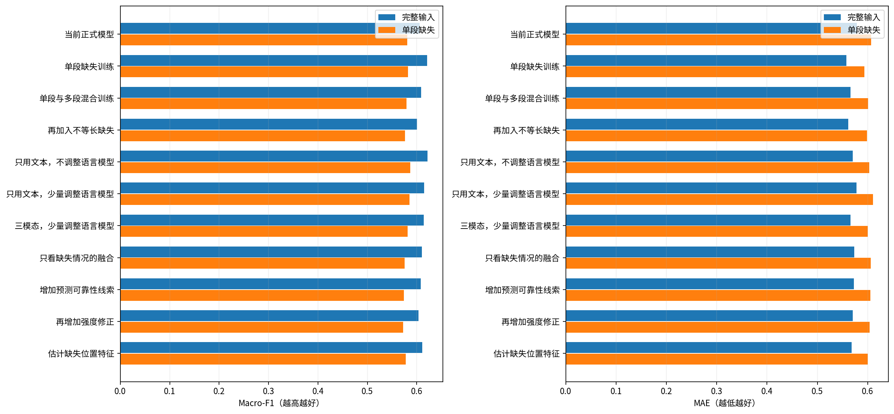
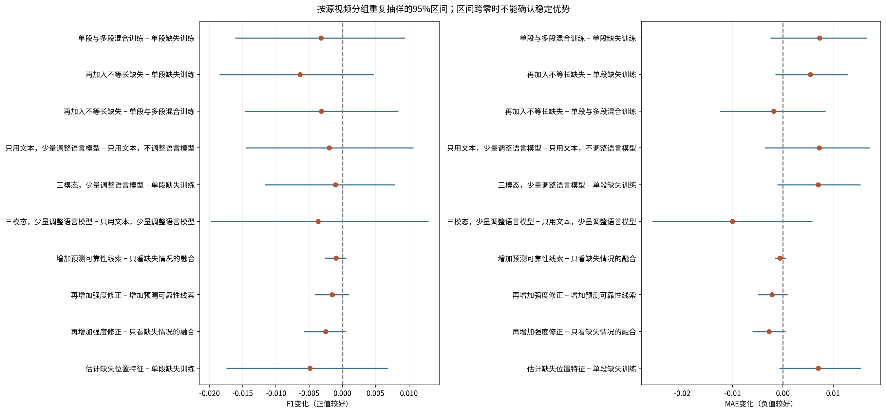
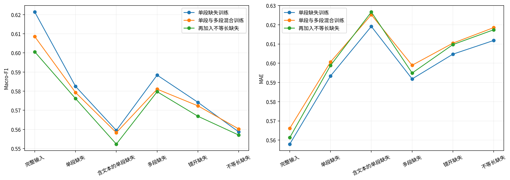

四组实验 · 三次独立训练 · 253次固定评价输入
| 方法 | 完整F1 | 完整MAE | 单段缺失F1 | 单段缺失MAE | 含文本缺失F1 |
|---|---|---|---|---|---|
| 当前正式模型 | 0.6055 | 0.5784 | 0.5811 | 0.6067 | 0.5598 |
| 单段缺失训练 | 0.6214 | 0.5579 | 0.5825 | 0.5934 | 0.5595 |
| 单段与多段混合训练 | 0.6085 | 0.5661 | 0.5793 | 0.6007 | 0.5583 |
| 再加入不等长缺失 | 0.6006 | 0.5613 | 0.5761 | 0.5989 | 0.5523 |
| 只用文本，不调整语言模型 | 0.6215 | 0.5702 | 0.5871 | 0.6032 | 0.5613 |
| 只用文本，少量调整语言模型 | 0.6149 | 0.5778 | 0.5851 | 0.6104 | 0.5627 |
| 三模态，少量调整语言模型 | 0.6139 | 0.5662 | 0.5815 | 0.6004 | 0.5577 |
| 只看缺失情况的融合 | 0.6106 | 0.5736 | 0.5751 | 0.6063 | 0.5498 |
| 增加预测可靠性线索 | 0.6085 | 0.5728 | 0.5742 | 0.6057 | 0.5483 |
| 再增加强度修正 | 0.6032 | 0.5702 | 0.5726 | 0.6036 | 0.5488 |
| 估计缺失位置特征 | 0.6110 | 0.5678 | 0.5776 | 0.6004 | 0.5524 |
只改变训练时删除内容的形状，模型和其他训练设置相同。单段与多段的删除总数相同；不等长版本让各模态独立抽取10%、30%、50%、70%的比例。
| 方法 | 完整F1 | 完整MAE | 单段缺失F1 | 单段缺失MAE | 含文本缺失F1 |
|---|---|---|---|---|---|
| 单段缺失训练 | 0.6214 | 0.5579 | 0.5825 | 0.5934 | 0.5595 |
| 单段与多段混合训练 | 0.6085 | 0.5661 | 0.5793 | 0.6007 | 0.5583 |
| 再加入不等长缺失 | 0.6006 | 0.5613 | 0.5761 | 0.5989 | 0.5523 |
单段与多段混合训练相对单段缺失训练：缺失F1变化-0.0032，95%区间[-0.0161, +0.0094]；MAE变化+0.0073，区间[-0.0025, +0.0167]。三次独立训练中，F1改善1次、MAE改善1次。判断：不支持作为整体改进保留。
再加入不等长缺失相对单段缺失训练：缺失F1变化-0.0064，95%区间[-0.0185, +0.0047]；MAE变化+0.0055，区间[-0.0015, +0.0129]。三次独立训练中，F1改善0次、MAE改善0次。判断：不支持作为整体改进保留。
在原有语言模型最后两层加入少量可学习参数，共24,576个；主体保持不变。分别比较纯文本和三模态情感预测。所有文本均先删除缺失词元，再计算表示。
| 方法 | 完整F1 | 完整MAE | 单段缺失F1 | 单段缺失MAE | 含文本缺失F1 |
|---|---|---|---|---|---|
| 单段缺失训练 | 0.6214 | 0.5579 | 0.5825 | 0.5934 | 0.5595 |
| 只用文本，不调整语言模型 | 0.6215 | 0.5702 | 0.5871 | 0.6032 | 0.5613 |
| 只用文本，少量调整语言模型 | 0.6149 | 0.5778 | 0.5851 | 0.6104 | 0.5627 |
| 三模态，少量调整语言模型 | 0.6139 | 0.5662 | 0.5815 | 0.6004 | 0.5577 |
只用文本，少量调整语言模型相对只用文本，不调整语言模型：缺失F1变化-0.0020，95%区间[-0.0146, +0.0107]；MAE变化+0.0072，区间[-0.0036, +0.0173]。三次独立训练中，F1改善2次、MAE改善0次。判断：不支持作为整体改进保留。
三模态，少量调整语言模型相对单段缺失训练：缺失F1变化-0.0010，95%区间[-0.0117, +0.0079]；MAE变化+0.0070，区间[-0.0011, +0.0154]。三次独立训练中，F1改善1次、MAE改善0次。判断：不支持作为整体改进保留。
三个对照共享相同的文本、声音、视觉预测模型。先只看缺失程度，再加入预测倾向、把握及模态分歧，最后允许不超过1分的强度修正。融合规则只用训练内部留出样本的预测来学习，标准化也仅使用每次拟合的样本。
| 方法 | 完整F1 | 完整MAE | 单段缺失F1 | 单段缺失MAE | 含文本缺失F1 |
|---|---|---|---|---|---|
| 只看缺失情况的融合 | 0.6106 | 0.5736 | 0.5751 | 0.6063 | 0.5498 |
| 增加预测可靠性线索 | 0.6085 | 0.5728 | 0.5742 | 0.6057 | 0.5483 |
| 再增加强度修正 | 0.6032 | 0.5702 | 0.5726 | 0.6036 | 0.5488 |
增加预测可靠性线索相对只看缺失情况的融合：缺失F1变化-0.0010，95%区间[-0.0026, +0.0005]；MAE变化-0.0006，区间[-0.0016, +0.0006]。三次独立训练中，F1改善1次、MAE改善3次。判断：不支持作为整体改进保留。
再增加强度修正相对增加预测可靠性线索：缺失F1变化-0.0016，95%区间[-0.0042, +0.0009]；MAE变化-0.0022，区间[-0.0050, +0.0009]。三次独立训练中，F1改善0次、MAE改善2次。判断：不支持作为整体改进保留。
用剩余内容估计缺失位置的64维特征。只在原本有观测、后被人工删除的位置学习重建；补出值始终与实际观测分开。没有任何观测时仍使用训练集先验。
| 方法 | 完整F1 | 完整MAE | 单段缺失F1 | 单段缺失MAE | 含文本缺失F1 |
|---|---|---|---|---|---|
| 单段缺失训练 | 0.6214 | 0.5579 | 0.5825 | 0.5934 | 0.5595 |
| 估计缺失位置特征 | 0.6110 | 0.5678 | 0.5776 | 0.6004 | 0.5524 |
估计缺失位置特征相对单段缺失训练：缺失F1变化-0.0049，95%区间[-0.0174, +0.0068]；MAE变化+0.0070，区间[-0.0007, +0.0155]。三次独立训练中，F1改善1次、MAE改善0次。判断：不支持作为整体改进保留。



历史测试已在前几轮使用；本次区间不消除反复选模型造成的偏差。